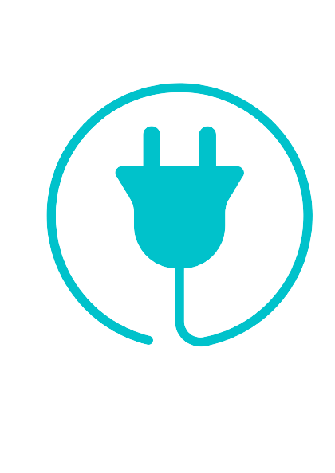
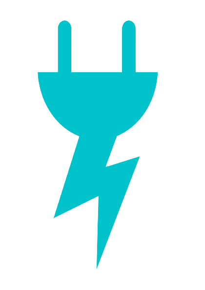
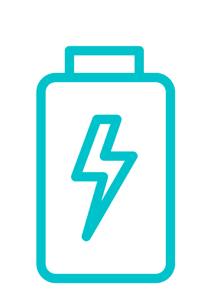
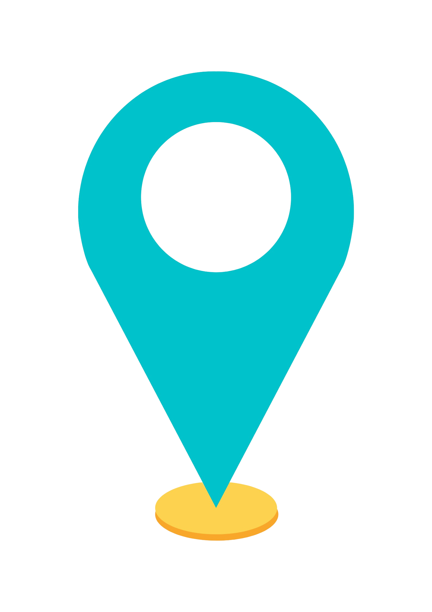

<ion-content fullscreen class="ion-padding" scroll-y="false">
  <ion-slides>

    <ion-slide>
      <div class="slide">
        
        <h2>Bienvenido</h2>
        <p>ELQ <b>Busca</b> electrolineras en la ciudad de Quito de forma rapida y facil .</p>
      </div>
    </ion-slide>

    <ion-slide>
      
      <h2>Que es ELQ?</h2>
      <p><b>Una aplicacion</b> que te permite encontrar la informacion que buscas de electrolineras, su ubicacion y formas de llegar.</p>
    </ion-slide>

    <ion-slide>
      
      <h2>Que necesito?</h2>
      <p><b>ELQ</b> requiere que tengas el GPS de tu movil activado para establecer las rutas.</p>
    </ion-slide>

    <ion-slide>
      
      <h2>Listo?</h2>
      <ion-button fill="clear">Continuar <ion-icon slot="end" name="arrow-forward"></ion-icon></ion-button>
    </ion-slide>

  </ion-slides>
</ion-content>
